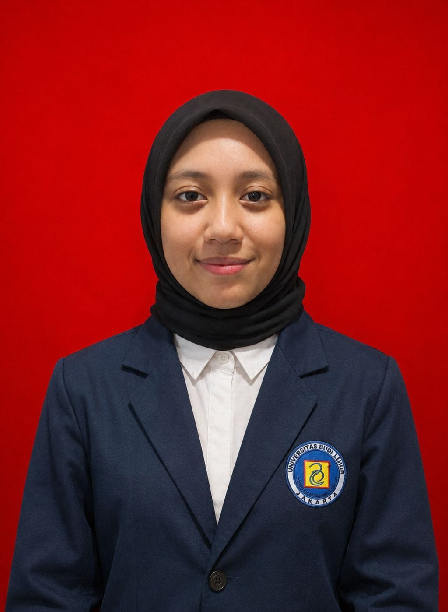

Queena Kaila Alyndra
ㅤ
About the Author
Halo! Saya Queena, mahasiswi Teknik Informatika di Universitas Budi Luhur yang memiliki ketertarikan besar di bidang pengembangan web. Website ini saya gunakan sebagai wadah untuk mendokumentasikan hasil belajar, tugas, dan rangkuman materi kuliah saya mengenai Tren Teknologi Informasi.
Saat ini saya sedang menempuh pendidikan S1 Teknik Informatika di Universitas Budi Luhur. Fokus utama saya adalah mempelajari teknologi frontend web development seperti HTML, CSS, dan JavaScript. Proyek ini merupakan bagian dari tugas Tren Teknologi Informasi, sekaligus langkah awal saya dalam membangun portofolio digital menuju karier profesional di industri teknologi.
Selamat datang di ruang digital saya! Saya Queena, seorang tech-enthusiast yang sedang belajar di Teknik Informatika Universitas Budi Luhur. Saya suka mengeksplorasi bagaimana teknologi mempermudah kehidupan manusia sehari-hari. Di sini, Anda bisa melihat rangkuman materi kuliah dan perkembangan belajar saya dalam dunia IT. Enjoy your stay!
Pengenalan Teknologi Informasi dan Perkembangannya dalam Kehidupan
Teknologi informasi merupakan bagian penting dalam kehidupan sehari-hari dan terus berkembang sehingga pengguna perlu memiliki literasi digital. Komputer adalah perangkat elektronik yang bekerja berdasarkan instruksi untuk menerima data sebagai input, memprosesnya, dan menghasilkan informasi. Perangkat yang digunakan dalam teknologi informasi sangat beragam, seperti laptop, tablet, desktop, server, smartphone, kamera digital, perangkat game, dan wearable device.
Dalam penggunaannya, komputer memiliki berbagai perangkat input, output, memori, dan penyimpanan. Input dapat dilakukan melalui keyboard, pointing device, suara, video, dan scanner, sedangkan output dapat ditampilkan melalui printer, display, dan speaker. Data yang berupa teks, angka, gambar, audio, atau video dapat diproses menjadi informasi yang memiliki makna dan dapat digunakan untuk membantu berbagai aktivitas serta pengambilan keputusan.
Teknologi informasi juga berkaitan erat dengan Internet, Web, dan komunikasi digital. Internet merupakan kumpulan jaringan komputer di seluruh dunia, sedangkan web menyediakan berbagai informasi dalam bentuk halaman dan situs web. Pengguna dapat mengakses informasi melalui browser dan mencari informasi menggunakan search engine. Selain itu, terdapat berbagai teknologi komunikasi seperti email, instant messaging, GPS, video conference, Wi-Fi, Bluetooth, dan jaringan seluler yang memungkinkan perangkat saling terhubung dan bertukar informasi.
Selain perangkat keras, teknologi informasi juga membutuhkan software atau aplikasi untuk menjalankan berbagai tugas. Sistem operasi dan aplikasi membantu pengguna berinteraksi dengan perangkat dan melakukan aktivitas tertentu. Teknologi dan jaringan kemudian dimanfaatkan dalam berbagai bidang, seperti pendidikan, pemerintahan, keuangan, retail, hiburan, kesehatan, ilmu pengetahuan, perjalanan, penerbitan, dan manufaktur.
Seiring meningkatnya penggunaan teknologi, pengguna juga perlu memperhatikan keamanan digital, privasi, kesehatan, dan lingkungan. Risiko seperti virus dan malware perlu diantisipasi, sementara penggunaan teknologi juga harus memperhatikan dampaknya terhadap lingkungan, misalnya dengan menggunakan perangkat hemat energi, mendaur ulang, dan memperpanjang masa penggunaan perangkat.
Selain itu, penggunaan komputer perlu memperhatikan kesehatan dan kenyamanan pengguna. Penggunaan teknologi yang tidak tepat dapat berkaitan dengan masalah seperti repetitive strain injury dan computer vision syndrome. Ergonomi diperlukan agar penggunaan perangkat lebih nyaman, efisien, dan aman.
Kesimpulannya, teknologi informasi mencakup berbagai perangkat, software, jaringan, Internet, dan layanan digital yang saling berkaitan. Perkembangan teknologi memberikan banyak kemudahan dalam belajar, bekerja, berkomunikasi, dan menjalankan berbagai kegiatan, sehingga pemahaman serta literasi digital menjadi penting agar teknologi dapat digunakan secara efektif dan bertanggung jawab.
Internet, Web, dan Komunikasi Digital
Materi ini membahas Internet, Web, dan berbagai cara berkomunikasi secara online. Internet merupakan jaringan komputer yang menghubungkan berbagai individu, perusahaan, lembaga pemerintah, dan institusi pendidikan di seluruh dunia. Untuk terhubung ke Internet, pengguna dapat menggunakan koneksi kabel seperti cable, DSL, dan fiber, maupun koneksi nirkabel seperti Wi-Fi, mobile broadband, fixed wireless, dan satelit. Setiap perangkat di Internet memiliki IP address, sedangkan domain name digunakan sebagai nama yang lebih mudah dikenali dan diterjemahkan ke alamat IP melalui DNS.
Materi juga menjelaskan World Wide Web (WWW), yang terdiri dari berbagai halaman dan situs web. Browser digunakan untuk mengakses halaman web, sedangkan search engine membantu menemukan informasi berdasarkan topik tertentu. Terdapat berbagai jenis website, seperti situs pendidikan, bisnis, berita, hiburan, kesehatan, perbankan, e-commerce, media sosial, dan lainnya.
Web juga dapat menampilkan media digital seperti gambar, animasi, audio, video, dan virtual reality. Selain itu, Internet menyediakan berbagai layanan komunikasi seperti email, instant messaging, chat room, diskusi online, VoIP, dan FTP untuk bertukar pesan, berkomunikasi, serta mengirim atau mengunduh file.
Kesimpulannya, Internet dan Web memudahkan pengguna untuk mencari informasi, mengakses berbagai layanan, menggunakan media digital, serta berkomunikasi dengan orang lain. Dalam menggunakan Internet, pengguna juga perlu menerapkan netiquette, yaitu aturan atau etika dalam berperilaku di Internet.
Komputer dan Perangkat Mobile dalam Teknologi Informasi
Materi ini membahas berbagai jenis komputer dan perangkat mobile serta fungsi dan penggunaannya. Komputer yang dibahas meliputi laptop, tablet, desktop, server, terminal, superkomputer, smartphone, kamera digital, e-book reader, media player, wearable device, dan perangkat game. Masing-masing memiliki bentuk dan fungsi yang berbeda sesuai kebutuhan pengguna.
Selain itu, terdapat server yang menyediakan layanan untuk perangkat lain dalam jaringan, serta cloud computing yang menyediakan sumber daya dan layanan melalui Internet. Terminal seperti POS, ATM, dan kios swalayan juga digunakan untuk membantu pengguna melakukan berbagai aktivitas secara mandiri.
Materi juga menjelaskan embedded computer, yaitu komputer khusus yang menjadi bagian dari produk yang lebih besar, seperti kendaraan, perangkat rumah, robot, dan mesin kantor. Perangkat-perangkat tersebut dapat terhubung melalui berbagai port dan koneksi, baik menggunakan kabel maupun teknologi nirkabel seperti Bluetooth, Wi-Fi, dan NFC.
Dalam penggunaan komputer, keamanan perangkat keras dan kesehatan pengguna juga perlu diperhatikan. Perangkat dapat dilindungi dengan kontrol akses, alarm, perangkat keamanan, dan aplikasi pelacak. Penggunaan teknologi yang terlalu lama juga dapat menyebabkan masalah seperti RSI, computer vision syndrome, serta kecanduan teknologi, sehingga diperlukan penggunaan yang aman dan ergonomis.
Kesimpulannya, komputer dan perangkat mobile memiliki berbagai bentuk dan fungsi yang mendukung aktivitas manusia. Pemahaman terhadap jenis perangkat, koneksi, keamanan, serta dampak penggunaannya penting agar teknologi dapat digunakan secara efektif, aman, dan nyaman.
Komputer dan Perangkat Mobile dalam Teknologi Informasi
Materi ini membahas berbagai jenis komputer dan perangkat mobile serta fungsi dan penggunaannya. Komputer yang dibahas meliputi laptop, tablet, desktop, server, terminal, superkomputer, smartphone, kamera digital, e-book reader, media player, wearable device, dan perangkat game. Masing-masing memiliki bentuk dan fungsi yang berbeda sesuai kebutuhan pengguna.
Selain itu, terdapat server yang menyediakan layanan untuk perangkat lain dalam jaringan, serta cloud computing yang menyediakan sumber daya dan layanan melalui Internet. Terminal seperti POS, ATM, dan kios swalayan juga digunakan untuk membantu pengguna melakukan berbagai aktivitas secara mandiri.
Materi juga menjelaskan embedded computer, yaitu komputer khusus yang menjadi bagian dari produk yang lebih besar, seperti kendaraan, perangkat rumah, robot, dan mesin kantor. Perangkat-perangkat tersebut dapat terhubung melalui berbagai port dan koneksi, baik menggunakan kabel maupun teknologi nirkabel seperti Bluetooth, Wi-Fi, dan NFC.
Dalam penggunaan komputer, keamanan perangkat keras dan kesehatan pengguna juga perlu diperhatikan. Perangkat dapat dilindungi dengan kontrol akses, alarm, perangkat keamanan, dan aplikasi pelacak. Penggunaan teknologi yang terlalu lama juga dapat menyebabkan masalah seperti RSI, computer vision syndrome, serta kecanduan teknologi, sehingga diperlukan penggunaan yang aman dan ergonomis.
Kesimpulannya, komputer dan perangkat mobile memiliki berbagai bentuk dan fungsi yang mendukung aktivitas manusia. Pemahaman terhadap jenis perangkat, koneksi, keamanan, serta dampak penggunaannya penting agar teknologi dapat digunakan secara efektif, aman, dan nyaman.